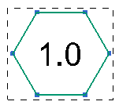
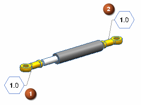
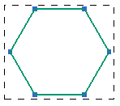

关联定制符号
从主模型定制符号创建定制符号实例时，可以将符号实例与主模型定制符号关联。如果主模型定制符号发生更改，则符号的关联副本也会更新以反映更改。希望符号实例总是反映定制符号的主模型定义时，可创建关联定制符号实例。
|
注释 |
对于嵌套的定制符号或继承到图纸上的 PMI 定制符号，不支持关联性。 |
创建关联定制符号时，务必注意以下方面。
-
如果主符号被删除、包含主符号的文件夹被删除或者符号实例被打散为几个组成部分，则与主符号的关联性便会丢失。
-
不能将主符号关联性添加到在 NX 8.0 之前的版本创建的现有符号实例。
-
创建主模型定制符号的实例时，锁定更新选项可用。设置后，符号实例被锁定，且主模型符号定义的更改不会影响实例。
原始主符号
原始主符号的符号实例
更改的主符号
更改的主符号的符号实例
 – 未锁定的符号
– 未锁定的符号  – 已锁定的符号
– 已锁定的符号
-
可以在部件导航器中打开过时的文件夹以标识和手动更新解锁的符号实例。
-
可以更改现有定制符号实例的锁定状态。
-
替换命令用于在断开原始关联后将解锁的符号实例关联到其他主符号定义。只能对在 NX 8.0 及更高版本中创建的符号实例使用替换命令。无法重新关联打散的符号。
“创建关联符号”用户默认设置和“锁定更新”选项
创建关联符号用户默认设置确定在创建定制符号实例时是否与其关联。还可确定定制符号对话框中的锁定更新选项的可见性和可用性。选中创建关联符号后，锁定更新选项即可见且可用，您可以创建关联和非关联的符号实例。未选中时，锁定更新选项不可见且符号实例通常作为主模型定制符号的非关联副本而创建。
位于何处？
锁定更新选项：
|
应用模块 |
制图 |
|
工具条 |
符号→符号下拉菜单列表→定制符号 |
|
菜单 |
插入→符号→定制 |
|
对话框中的位置 |
设置组→锁定更新 |
创建关联符号用户默认设置：
|
菜单 |
文件→实用工具→用户默认设置 |
|
对话框中的位置 |
制图→定制符号→全部选项卡→创建关联符号 |
替换命令：
|
应用模块 |
制图 |
|
先决条件 |
用于定义定制符号实例的原始主模型定制符号不再可用。 |
|
图形窗口 |
右键单击定制符号实例→替换 |